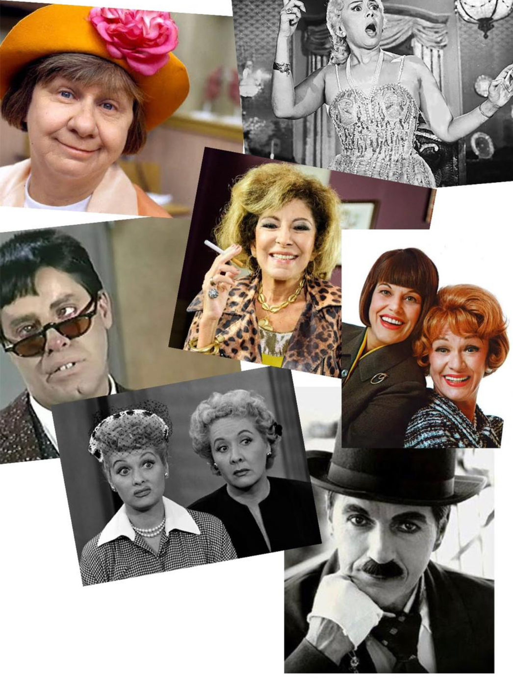

Qual é o medo que atores têm da piada em cena?

É uma pergunta que faço a mim mesmo há muitos anos. Tive grandes mestres que me ensinaram lições preciosas a esse respeito: Maria Alice Vergueiro, Myriam Muniz, Petrônio Nascimento, Cacá Rosset, Osvaldo Gabrieli, José Rubens Cachá, Ary França, Mario Cesar Camargo. Alguns me ensinaram na prática, outros me sugeriram filmes, autores e livros. Trabalhei esses aprendizados ao longo dos meus 40 anos de carreira e ainda estudo o tema. Aprendo muito com meus alunos.
Durante um processo de preparação de atores – o que tem sido minha função recente em montagens da escola que coordeno –, tenho me ocupado essencialmente com o que considero um preceito basilar na composição de um personagem: a compreensão intelectual e racional do texto teatral. Assim, na escola e fora dela, quando preparo profissionais para audições ou em aulas particulares, meu processo segue invariavelmente os mesmos passos: leitura e uma construção clara e racional dos aspectos lógicos do texto. Normalmente, um bom texto, de um bom autor, segue passos claros na construção de pensamento daquilo que chamamos de ‘personagem’.
Nesse trabalho, que tenho tentado construir como metodologia, sigo etapas que, para mim, são fundamentais. E vou fazendo uso de outros autores e pensadores antes de mim. Os fundamentos sobre a ideia de circunstâncias que herdamos desde Aristóteles são o ponto de partida: quem fala, para quem, por que fala, onde está, em que momento da narrativa se encontra. São as noções que serão desenvolvidas mais tarde por outros pensadores como, por exemplo, Diderot ou Stanislavski; e é apoiado neles que começo a tentar mapear os caminhos da dialética do texto a ser transformado em ação, pois, afinal de contas, o objetivo da literatura dramática é o que eu sempre chamo de “tirar a bunda da cadeira e dar vida a um monte de palavrinhas escritas num pedaço de papel”.
O primeiro contato com a palavra deve ser a sua sonoridade e o pensamento que ela carrega, seu significado e aplicabilidade em diversas construções frasais, em que lugar na classificação gramatical ela se encontra e que função ocupa numa frase ou pensamento. Sim, eu sugiro ao ator que volte – ainda que de forma rudimentar – às aulas de português perdidas no tempo e no espaço da memória. Seguem-se as observações quanto a forma do texto: é em versos, prosa, misto? Se em versos (como em Gil Vicente ou Calderón) qual a métrica – decassílabos, dodecassílabos, iâmbicos, redondilhas?
Ainda quanto à forma, busco investigar a pontuação. O solilóquio de Shylock em O Mercador de Veneza, por exemplo, possui dez pontos de interrogação e, cada um deles, deve ser lido de forma diferente. Espera-se. Do mesmo modo que existem repetições que são propositais, como no monólogo da cadeira em Gota D’água de Chico Buarque, em que ouvimos a palavra (cadeira) ser dita dez vezes por Creonte, além das outras dez em que ouvimos o verbo sentar e seus derivativos. Pra falar isso é preciso estudo.
E a expressão do pensamento, como se dá? Pode haver mapeamentos diversos: as aliterações e rimas (especialmente no caso de textos poéticos, como os de Chico Buarque de Holanda), as metáforas e oposições (abundantes em Shakespeare, Racine ou Strindberg), os neologismos (como vemos no monólogo Veneno da já mencionada Gota D’água) ou as gírias (como encontramos em abundância na obra de Plínio Marcos ou Nelson Rodrigues).
Finalmente, chegamos ao ponto nevrálgico: o que vulgarmente chamamos de emoções envolvidas na obra. Em verdade, personagens refletem os mais diversos estados de espírito, emoções e sentimentos que perpassam a “alma humana” como nos ensinam Freud ou Jung. Equivale dizer que um performer precisa ficar correndo atrás de “sentir ou se emocionar”? Definitivamente não. A realização de um estado de espírito em cena deve também ser uma atitude meticulosamente construída, como uma partitura lógica sobre o que queremos comunicar e que resultado objetivamos na plateia – a tal catarse é um Éden sempre muito almejado. E ela está erroneamente associada ao descontrole emocional ou – minimamente – às lágrimas. Seja do performer, seja do público. Gosto sempre de citar um dos nossos grandes atores do audiovisual, Tony Ramos: “para que o público chore, o ator deve quase chorar!”
Mas e sobre fazer o público rir? Como é que fica? De um modo geral, somos por excelência e tradição o país da comédia. Nossas heranças greco-romanas fizeram de nós a nação onde “tudo vira piada” e o “povo que ri de tudo”. Por outro lado, entendemos pouco da piada e todos os seus mecanismos. Deixamos o humor de lado a cargo exclusivamente daquelas pessoas que são as chamadas “alegria das festas”. São normalmente grandes improvisadores, capazes de detectar num ambiente, situação ou acontecimento a sua porção de ironia expondo-a a partir de sua sagacidade e perspicácia. Normalmente são excelentes humoristas de stand-up, criadores de tipos e até articuladores de caricaturas. Nem todos serão bons comediantes. Simplesmente porque não serão capazes de estudar um texto e extrair dele sua graça, não encontrarão o “tempo” na piada escrita por outro. A ironia de um autor, a sagacidade de um dramaturgo, o sarcasmo e a jocosidade de um pensador, tudo isso precisa encontrar performers capazes de serem veículos da piada alheia. E, por fim, recomendo ler Bergson.
Muitas vezes, preparando um ator ou atriz, percebo esse criador não sendo capaz de simples bom humor ou de – ouso dizer – inteligência na hora de construir uma partitura de comédia. Ou ainda simplesmente encontrar e propor uma gag vocal ou corporal. Daí, me pego dizendo: “atenção, isso é uma piada, cuidado com o tempo, arma a piada, piada é tempo, essa repetição de palavra ou esta pontuação está aí para causar riso na plateia, não ria da própria piada – quem tem que rir é o público”. Tudo isso, está no texto! Só aí começamos a procura pela cena.